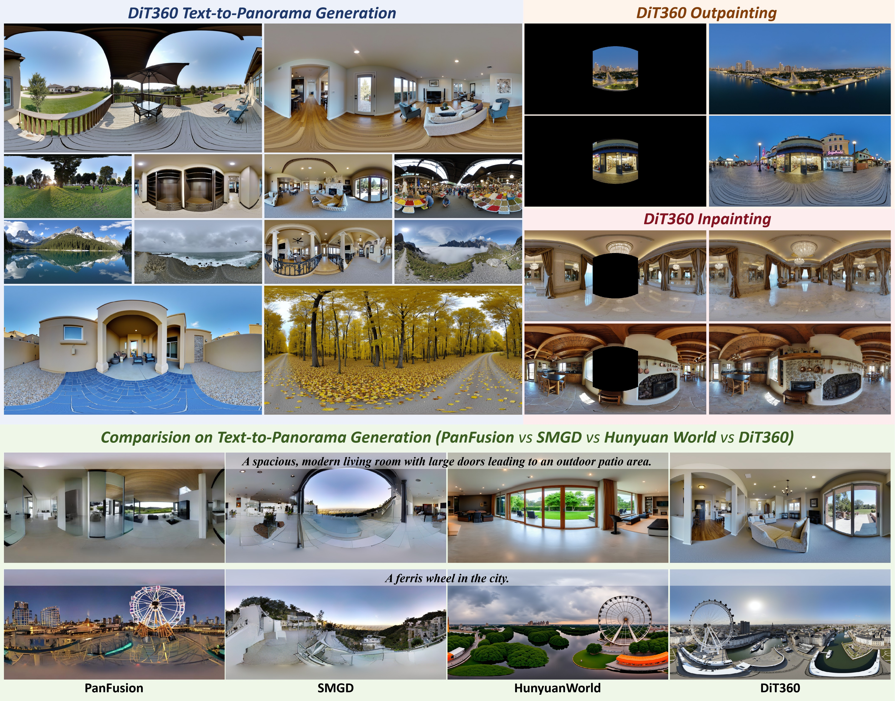
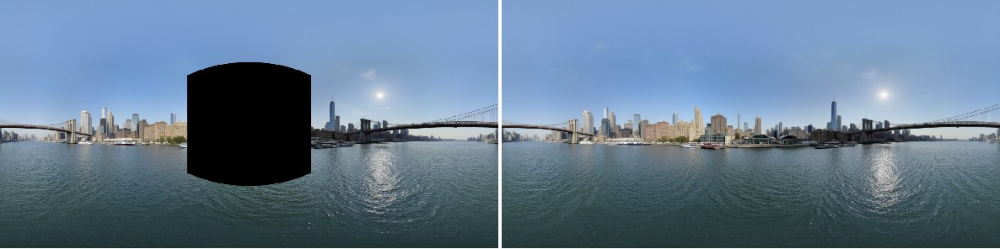
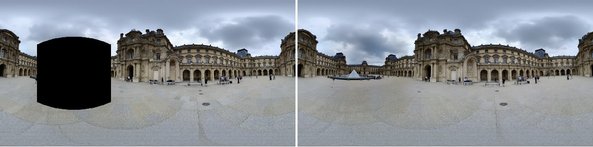
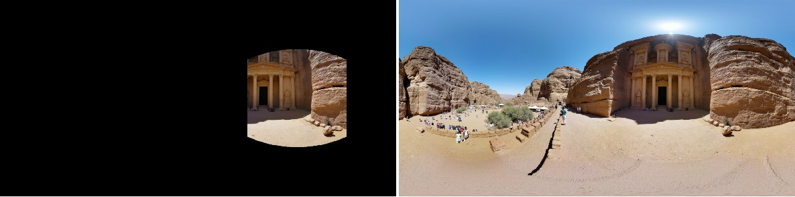
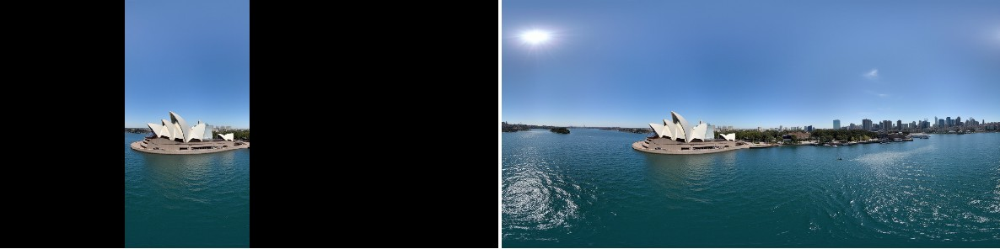
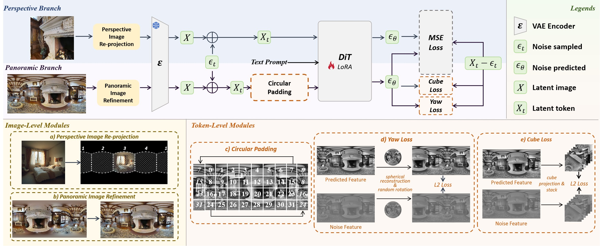

DiT360:
High-Fidelity Panoramic Image Generation via Hybrid Training
*Equal Contribution
†Project Lead
✉Corresponding Authors

TL;DR:
We propose DiT360, a two-level framework integrating image- and token-level strategies to enhance perceptual realism and geometric fidelity in panoramic image generation.
In this work, we propose DiT360, a DiT-based framework that performs hybrid training on perspective and panoramic data for panoramic image generation.
For the issues of maintaining geometric fidelity and photorealism in generation quality, we attribute the main reason to the lack of large-scale, high-quality, real-world panoramic data, where such a data-centric view differs from prior methods that focus on model design.
Basically, DiT360 has several key modules for inter-domain transformation and intra-domain augmentation, applied at both the pre-VAE image level and the post-VAE token level.
At the image level, we incorporate cross-domain knowledge through perspective image guidance and panoramic refinement, which enhance perceptual quality while regularizing diversity and photorealism.
At the token level, hybrid supervision is applied across multiple modules, which include circular padding for boundary continuity, yaw loss for rotational robustness, and cube loss for distortion awareness.
Extensive experiments on text-to-panorama, inpainting, and outpainting tasks demonstrate that our method achieves better boundary consistency and image fidelity across eleven quantitative metrics.
Indoor Scene Generation | Text to Panorama
Outdoor Scene Generation | Text to Panorama

A panoramic view of city skyline from the river.

Florence central plaza with historic buildings and fountains.

Petra, Jordan, with rock-cut architecture and desert surroundings.

Sydney Opera House with harbor and skyscrapers.

Building upon Diffusion Transformer, we introduce DiT360 for panoramic image generation,
which adopts a hybrid paradigm to jointly exploit perspective and panoramic data through two training branches.
The key modules enabling hybrid training are categorized into image-level regularization
and token-level supervision.
At the image level, perspective image guidance and panoramic refinement introduce cross-domain knowledge to enhance perceptual quality while regularizing diversity and photorealism.
At the token level, hybrid supervision across multiple objectives is conducted,
which includes circular padding for boundary continuity,
yaw loss for rotational robustness, and cube loss for distortion awareness.
Together, this hybrid design operates across multiple representation levels to achieve perceptual photorealism and geometric fidelity.
If you find our work useful, please consider citing:
@article{xiang2024structured,
title = {Structured 3D Latents for Scalable and Versatile 3D Generation},
author = {Xiang, Jianfeng and Lv, Zelong and Xu, Sicheng and Deng, Yu and Wang, Ruicheng and
Zhang, Bowen and Chen, Dong and Tong, Xin and Yang, Jiaolong},
journal = {arXiv preprint arXiv:2412.01506},
year = {2024}
}